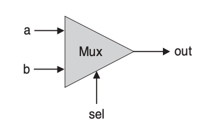
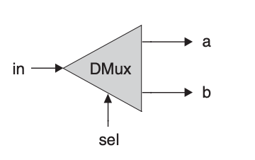
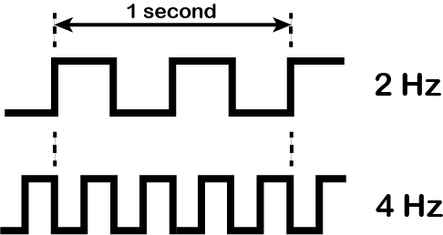
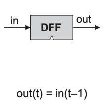
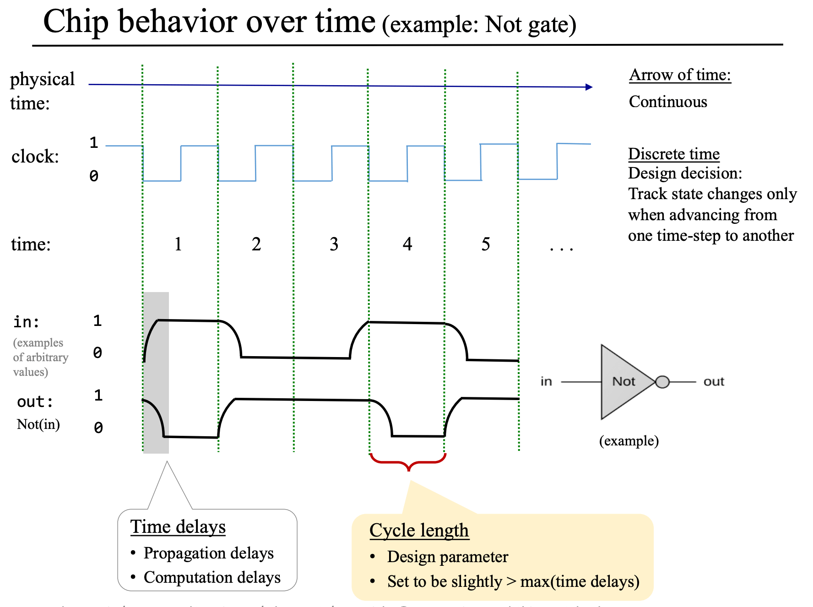

Modern computers store and process information stored as two-valued signals — called bits (i.e. binary digits). Two-value signals were chosen because they can readily be represented, stored, and transmitted. For example, they can be represented as:
A binary variable or a bit can represent two possible states: 0 and 1; off and on; false and true; no and yes; etc. binary variables can be used to represent states. e.g.
| 0 | 0 | 0 |
| 0 | 0 | 1 |
| 0 | 1 | 0 |
| 0 | 1 | 1 |
| 1 | 0 | 0 |
| 1 | 0 | 1 |
| 1 | 1 | 0 |
| 1 | 1 | 1 |
Boolean algebra is used to manipulate binary values. A boolean function (aka boolean operator) is a function that operates on binary inputs and returns binary outputs.
The total number of boolean functions for binary variables is , because:
0 or 1.e.g. There are distinct boolean functions for binary variables.
| Function | Expression | A=0, B=0 | A=0, B=1 | A=1, B=0 | A=1, B=1 |
|---|---|---|---|---|---|
| F0 | 0 | 0 | 0 | 0 | 0 |
| F1 | NOT A AND NOT B | 1 | 0 | 0 | 0 |
| F2 | NOT A AND B | 0 | 1 | 0 | 0 |
| F3 | NOT A | 1 | 1 | 0 | 0 |
| F4 | A AND NOT B | 0 | 0 | 1 | 0 |
| F5 | NOT B | 1 | 0 | 1 | 0 |
| F6 | XOR(A, B) | 0 | 1 | 1 | 0 |
| F7 | NAND(A, B) | 1 | 1 | 1 | 0 |
| F8 | A AND B | 0 | 0 | 0 | 1 |
| F9 | XNOR(A, B) | 1 | 0 | 0 | 1 |
| F10 | B | 0 | 1 | 0 | 1 |
| F11 | NOT A OR B | 1 | 1 | 0 | 1 |
| F12 | A | 0 | 0 | 1 | 1 |
| F13 | A OR NOT B | 1 | 0 | 1 | 1 |
| F14 | A OR B | 0 | 1 | 1 | 1 |
| F15 | 1 | 1 | 1 | 1 | 1 |
A logic gate (also called chip in the book) is a physical device that implements a boolean function. Every digital device is based on a set of chips designed to store and process binary information. These chips are all made of elementary logic gates. Elementary logic gates can be physically realized using many different hardware technologies, but their logical behavior, or abstraction, is consistent across implementations.
Since all logic gates have the same input and output data type (i.e. binary), they can be combined, creating composite gates of arbitrary complexity. e.g. Xor = Or(And(a, Not(b)), And(Not(a), b)).
Any given logic gate can be viewed from two perspective:
A hardware description language (HDL) is a specialized computer language used to describe the structure and behavior of chips.
The designer specifies the chip logic by writing a HDL program, which is then subjected to a rigorous battery of tests. The tests are carried out virtually, using computer simulation: A special software tool, called a hardware simulator, takes the HDL program as input and creates a software representation of the chip logic. Next, the designer can instruct the simulator to test the virtual chip on various sets of inputs. The simulator computes the chip outputs, which are then compared to the desired outputs.
The hardware simulator can also simulate and quantify the performance characteristics (energy consumption, computational speed, cost) of a chip.
The specifications of the logic gates needed to build the chips of our computer system are given below.
First, the primitive NAND gate, which is shorthand for Not-And because it’s equivalent to Not(And(a, b)).
Truth table:
| a | b | Nand(a, b) |
|---|---|---|
| 0 | 0 | 1 |
| 0 | 1 | 1 |
| 1 | 0 | 1 |
| 1 | 1 | 0 |
API:
| Chip name | Nand |
| Input | a, b |
| Output | out |
| Function | if ((a == 1) and (b==1)) then out = 0, else out = 1 |
The NAND gate is called a primitive gate because it can be used to implement any boolean function. Proof:
Various subsets of logical operators can be used for expressing any boolean function, and { And, Or, Not } is one such subset. NAND can be used to implement each member of the subset as demonstrated below.
NOT(a) = NAND(a, a)
AND(a, b) = NOT(NAND(a, b))
OR(a, b) = NOT(NOT(a) AND NOT(b)) (De morgan law); This is equivalent to: OR(a, b) = NAND(NOT(a), NOT(b))
Next, we look at a set of four gates that implement classical logical operators. Starting with the Not (aka inverter) gate, which outputs the opposite value of its input’s value.

Truth table:
| a | Not(a) |
|---|---|
| 0 | 1 |
| 1 | 0 |
API:
| Chip name | Not |
| Input | in |
| Output | out |
| Function | if (in == 0) then out = 1, else out = 0 |
HDL:
CHIP Not {
IN in;
OUT out;
PARTS:
Nand(a= in, b= in, out= out);
}
The next classical gate is the AND gate, which returns when both its inputs are , and otherwise.

Truth table:
| a | b | And(a, b) |
|---|---|---|
| 0 | 0 | 0 |
| 0 | 1 | 0 |
| 1 | 0 | 0 |
| 1 | 1 | 1 |
API:
| Chip name | And |
| Input | a, b |
| Output | out |
| Function | if ((a == 1) and (b==1)) then out = 1, else out = 0 |
HDL:
CHIP And {
IN a, b;
OUT out;
PARTS:
Nand(a= a, b= b, out= nandout);
Not(in= nandout, out= out);
}
The Or gate returns when at least one of its inputs is , and otherwise.

Truth table:
| a | b | Or(a, b) |
|---|---|---|
| 0 | 0 | 0 |
| 0 | 1 | 1 |
| 1 | 0 | 1 |
| 1 | 1 | 1 |
API:
| Chip name | Or |
| Input | a, b |
| Output | out |
| Function | if ((a == 0) and (b == 0)) then out = 0, else out = 1 |
HDL:
CHIP Or {
IN a, b;
OUT out;
PARTS:
Not(in= a, out= nota);
Not(in= b, out= notb);
And(a= nota, b= notb, out= notaandnotb);
Not(in= notaandnotb, out= out);
}
The last classical gate we will build is the Xor (aka exclusive or) gate which returns when exactly one of its input is , and otherwise.

Truth table:
| a | b | Xor(a, b) |
|---|---|---|
| 0 | 0 | 0 |
| 0 | 1 | 1 |
| 1 | 0 | 1 |
| 1 | 1 | 0 |
API:
| Chip name | Xor |
| Input | a, b |
| Output | out |
| Function | if (a != b) then out = 1, else out = 0 |
HDL:
CHIP Xor {
IN a, b;
OUT out;
PARTS:
Not(in= a, out= nota);
Not(in= b, out= notb);
And(a= a, b= notb, out= aandnotb);
And(a= b, b= nota, out= bandnota);
Or(a= aandnotb, b= bandnota, out= out);
}
Next, we look at a set of control flow gates. These gates provide means for controlling flows of information. The first of such gate is the multiplexer which is a three-input gate. Two input bits, named a and b, are interpreted as data bits, and a third bit, named sel, is interpreted as a selection bit. The multiplexer uses sel to select and output the value of either a or b.

Truth table:
| a | b | sel | out |
|---|---|---|---|
| 0 | 0 | 0 | 0 |
| 0 | 0 | 1 | 0 |
| 0 | 1 | 0 | 0 |
| 0 | 1 | 1 | 1 |
| 1 | 0 | 0 | 1 |
| 1 | 0 | 1 | 0 |
| 1 | 1 | 0 | 1 |
| 1 | 1 | 1 | 1 |
API:
| Chip name | Mux |
| Input | a, b, sel |
| Output | out |
| Function | if (sel == 0) then out = a, else out = b |
HDL:
CHIP Mux {
IN a, b, sel;
OUT out;
PARTS:
Not(in= sel, out= notsel);
And(a= a, b= notsel, out= aandnotsel);
And(a= b, b= sel, out= bandsel);
Or(a= aandnotsel, b= bandsel, out= out);
}
Next is the demultiplexer gate which performs the opposite function of a multiplexer: it takes a single input value and routes it to one of two possible outputs, according to a selector bit that selects the destination output.

| in | sel | a | b |
|---|---|---|---|
| 0 | 0 | 0 | 0 |
| 0 | 1 | 0 | 0 |
| 1 | 0 | 1 | 0 |
| 1 | 1 | 0 | 1 |
API:
| Chip name | DMux |
| Input | in, sel |
| Output | a, b |
| Function | if (sel == 0) then {a, b} = {in, 0}, else {a, b} = {0, in} |
HDL:
CHIP DMux {
IN in, sel;
OUT a, b;
PARTS:
Not(in= sel, out= notsel);
And(a= in, b= notsel, out= a);
And(a= in, b= sel, out= b);
}
Now, we explore multi-bit versions of some of the basic gates above. This section describes several 16-bit logic gates that will be needed for constructing our target computer platform. HDL programs treat multi-bit values like single-bit values, except that the values can be indexed in order to access individual bits. For example, if in and out represent 16-bit values, then out [3] = in[5] sets the 3rd bit of out to the value of the 5th bit of in. The bits are indexed from right to left, the rightmost bit being the 0’th bit and the leftmost bit being the 15’th bit (in a 16-bit setting).
The first multi-bit gate we will build is the 16-bit Not gate, which applies the Boolean operation Not to every one of the input bits.
API:
| Chip name | Not16 |
| Input | in[16] |
| Output | out[16] |
| Function | for i = 0..15 out[i] = Not(in[i]) |
HDL:
CHIP Not16 {
IN in[16];
OUT out[16];
PARTS:
Not(in= in[0], out= out[0]);
Not(in= in[1], out= out[1]);
Not(in= in[2], out= out[2]);
Not(in= in[3], out= out[3]);
Not(in= in[4], out= out[4]);
Not(in= in[5], out= out[5]);
Not(in= in[6], out= out[6]);
Not(in= in[7], out= out[7]);
Not(in= in[8], out= out[8]);
Not(in= in[9], out= out[9]);
Not(in= in[10], out= out[10]);
Not(in= in[11], out= out[11]);
Not(in= in[12], out= out[12]);
Not(in= in[13], out= out[13]);
Not(in= in[14], out= out[14]);
Not(in= in[15], out= out[15]);
}
Next is the 16-bit And gate, which applies the Boolean operation And to every one of the input bits.
API:
| Chip name | And16 |
| Input | a[16], b[16] |
| Output | out[16] |
| Function | for i = 0..15 out[i] = And(a[i], b[i]) |
HDL:
CHIP And16 {
IN a[16], b[16];
OUT out[16];
PARTS:
And(a= a[0], b= b[0], out= out[0]);
And(a= a[1], b= b[1], out= out[1]);
And(a= a[2], b= b[2], out= out[2]);
And(a= a[3], b= b[3], out= out[3]);
And(a= a[4], b= b[4], out= out[4]);
And(a= a[5], b= b[5], out= out[5]);
And(a= a[6], b= b[6], out= out[6]);
And(a= a[7], b= b[7], out= out[7]);
And(a= a[8], b= b[8], out= out[8]);
And(a= a[9], b= b[9], out= out[9]);
And(a= a[10], b= b[10], out= out[10]);
And(a= a[11], b= b[11], out= out[11]);
And(a= a[12], b= b[12], out= out[12]);
And(a= a[13], b= b[13], out= out[13]);
And(a= a[14], b= b[14], out= out[14]);
And(a= a[15], b= b[15], out= out[15]);
}
Followed by the 16-bit Or gate, which applies the Boolean operation Or to every one of the input bits.
API:
| Chip name | Or16 |
| Input | a[16], b[16] |
| Output | out[16] |
| Function | for i = 0..15 out[i] = Or(a[i], b[i]) |
HDL:
CHIP Or16 {
IN a[16], b[16];
OUT out[16];
PARTS:
Or(a= a[0], b= b[0], out= out[0]);
Or(a= a[1], b= b[1], out= out[1]);
Or(a= a[2], b= b[2], out= out[2]);
Or(a= a[3], b= b[3], out= out[3]);
Or(a= a[4], b= b[4], out= out[4]);
Or(a= a[5], b= b[5], out= out[5]);
Or(a= a[6], b= b[6], out= out[6]);
Or(a= a[7], b= b[7], out= out[7]);
Or(a= a[8], b= b[8], out= out[8]);
Or(a= a[9], b= b[9], out= out[9]);
Or(a= a[10], b= b[10], out= out[10]);
Or(a= a[11], b= b[11], out= out[11]);
Or(a= a[12], b= b[12], out= out[12]);
Or(a= a[13], b= b[13], out= out[13]);
Or(a= a[14], b= b[14], out= out[14]);
Or(a= a[15], b= b[15], out= out[15]);
}
Finally, the 16-bit Multiplexer gate, which operates exactly as the basic multiplexer, except that its input and output are 16-bits wide.
API:
| Chip name | Mux16 |
| Input | a[16], b[16], sel |
| Output | out[16] |
| Function | if (sel == 0) then for i = 0..15 out[i] = a[i], else for i = 0..15 out[i] = b[i] |
HDL:
CHIP Mux16 {
IN a[16], b[16], sel;
OUT out[16];
PARTS:
Mux(a= a[0], b= b[0], sel= sel, out= out[0]);
Mux(a= a[1], b= b[1], sel= sel, out= out[1]);
Mux(a= a[2], b= b[2], sel= sel, out= out[2]);
Mux(a= a[3], b= b[3], sel= sel, out= out[3]);
Mux(a= a[4], b= b[4], sel= sel, out= out[4]);
Mux(a= a[5], b= b[5], sel= sel, out= out[5]);
Mux(a= a[6], b= b[6], sel= sel, out= out[6]);
Mux(a= a[7], b= b[7], sel= sel, out= out[7]);
Mux(a= a[8], b= b[8], sel= sel, out= out[8]);
Mux(a= a[9], b= b[9], sel= sel, out= out[9]);
Mux(a= a[10], b= b[10], sel= sel, out= out[10]);
Mux(a= a[11], b= b[11], sel= sel, out= out[11]);
Mux(a= a[12], b= b[12], sel= sel, out= out[12]);
Mux(a= a[13], b= b[13], sel= sel, out= out[13]);
Mux(a= a[14], b= b[14], sel= sel, out= out[14]);
Mux(a= a[15], b= b[15], sel= sel, out= out[15]);
}
The last set of gates we will build are the multi-way versions of basic gates. Logic gates that operate on one or two inputs have natural generalization to multi-way variants that operate on more than two inputs.
The first gate in this set is the multi-way Or gate. An $m$-way Or gate outputs 1 when at least one of its m input bits is 1, and 0 otherwise. Our target computer will need an $8$-way variant of this gate:
| Chip name | Or8Way |
| Input | in[8] |
| Output | out |
| Function | out = Or(in[0], in[1], ..., in[7]) |
CHIP Or8Way {
IN in[8];
OUT out;
PARTS:
Or(a= in[0], b= in[1], out= in01);
Or(a= in01, b= in[2], out= in012);
Or(a= in012, b= in[3], out= in0123);
Or(a= in0123, b= in[4], out= in01234);
Or(a= in01234, b= in[5], out= in012345);
Or(a= in012345, b= in[6], out= in0123456);
Or(a= in0123456, b= in[7], out= out);
}
Next, we build a multi-way multi-bit multiplexer gate. An m$-way $n$-bit multiplexer selects one of its $m n$-bit inputs, and outputs it to its $n$-bit output. The selection is specified by a set of $k selection bits, where .
Our target computer platform requires two variants of this chip: a $4$-way $16$-bit multiplexer and an $8$-way $16$-bit multiplexer.
API:
| Chip name | Mux4Way16 |
| Input | a[16], b[16], c[16], d[16], sel[2] |
| Output | out[16] |
| Function | if (sel == 00) then out = a,else if (sel == 01) then out = b,else if (sel == 10) then out = c,else if (sel == 11) then out = d |
| Chip name | Mux8Way16 |
| Input | a[16], b[16], c[16], d[16], e[16], f[16], g[16], h[16], sel[3] |
| Output | out[16] |
| Function | if (sel == 000) then out = a,else if (sel == 001) then out = b,else if (sel == 010) then out = c,else if (sel == 011) then out = delse if (sel == 100) then out = e,else if (sel == 101) then out = f,else if (sel == 110) then out = g,else if (sel == 111) then out = h |
HDL:
CHIP Mux4Way16 {
IN a[16], b[16], c[16], d[16], sel[2];
OUT out[16];
PARTS:
// First level: Select between a/b and c/d using sel[0]
Mux16(a=a, b=b, sel=sel[0], out=ab); // ab is the output of first Mux16
Mux16(a=c, b=d, sel=sel[0], out=cd); // cd is the output of second Mux16
// Second level: Select between ab and cd using sel[1]
Mux16(a=ab, b=cd, sel=sel[1], out=out);
}
CHIP Mux8Way16 {
IN a[16], b[16], c[16], d[16],
e[16], f[16], g[16], h[16],
sel[3];
OUT out[16];
PARTS:
Mux4Way16(a= a, b= b, c= c, d= d, sel= sel[0..1], out= abcd);
Mux4Way16(a= e, b= f, c= g, d= h, sel= sel[0..1], out= efgh);
Mux16(a= abcd, b= efgh, sel= sel[2], out= out);
}
Finally, we build a multi-way 16-bit demultiplexer gate. An m$-way $n$-bit demultiplexer routes its single $n$-bit input to one of its $m n$-bit outputs. The other outputs are set to `0`. The selection is specified by a set of $k selection bits, where .
Our target computer platform requires two variants of this chip: a $4$-way $1$-bit demultiplexer and an $8$-way $1$-bit demultiplexer.
API:
| Chip name | DMux4Way |
| Input | in, sel[2] |
| Output | a, b, c, d |
| Function | if (sel == 00) then {a, b, c, d} = {in, 0, 0, 0},else if (sel == 01) then {a, b, c, d} = {0, in, 0, 0},else if (sel == 10) then {a, b, c, d} = {0, 0, in, 0},else if (sel == 11) then {a, b, c, d} = {0, 0, 0, in} |
HDL:
CHIP DMux4Way {
IN in, sel[2];
OUT a, b, c, d;
PARTS:
DMux(in= in, sel= sel[1], a= first, b= second);
DMux(in= first, sel= sel[0], a= a, b= b);
DMux(in= second, sel= sel[0], a= c, b= d);
}
| Chip name | DMux8Way |
| Input | in, sel[3] |
| Output | a, b, c, d, e, f, g, h |
| Function | if (sel == 000) then {a, b, c, …, h} = {1, 0, 0, 0, 0, 0, 0, 0},else if (sel == 001) then {a, b, c, …, h} = {0, 1, 0, 0, 0, 0, 0, 0},if (sel == 010) then {a, b, c, …, h} = {0, 0, 1, 0, 0, 0, 0, 0},… if (sel == 111) then {a, b, c, …, h} = {0, 0, 0, 0, 0, 0, 0, 1} |
HDL:
CHIP DMux8Way {
IN in, sel[3];
OUT a, b, c, d, e, f, g, h;
PARTS:
DMux(in= in, sel= sel[2], a= first, b= second);
DMux4Way(in= first, sel= sel[0..1], a= a, b= b, c= c, d= d);
DMux4Way(in= second, sel= sel[0..1], a= e, b= f, c= g, d= h);
}
🎯 Objective: Use the gates from chapter 1 to build an ALU (Arithmetic logic unit).
The ALU is the centerpiece chip that executes all the arithmetic and logical operations performed by the computer.
A binary number is a number expressed in the base-2 positional numeral system. Let be a string of binary digits, the value of in the base-2 positional numeral system is defined as:
$
x = \sum_{i=0}^{n} x_i \cdot b^i
$
e.g.
=
=
=
A numeral system is a mathematical notation for representing numbers of a given set using digits or other symbols in a consistent manner.
In a positional numeral system, the radix or base is the number of unique digits, including the digit zero, used to represent numbers.
Computers represent numbers in binary. Any number can be represented by a sequence of bits (binary digits), which in turn may be represented by any mechanism capable of being in two mutually exclusive states.
Integer numbers are unbounded: for any given number , there are integers that are less than and integers greater than . However, computers are finite machines that use a fixed word size for representing numbers. An 8-bit register can represent different things. Using bits, we can represent all the nonnegative integers ranging from to .
The three common methods of extending the binary numeral system to represent signed numbers (i.e. positive, negative, and zero numbers) numbers are:
Of the three, two’s complement is the most commonly used today.
A two's complement number system encodes positive and negative numbers in a binary number representation. The weight of each bit is a power of two, except for the most significant bit (aka sign bit), whose weight is the negative of the corresponding power of two. The value of an N$-bit integer $a_{N-1} a_{N-2} ... a_0 is given by the following formula:
The two's complement of an N$-bit number is the complement of that number with respect to $2^N (this is the property that gives this system its name). i.e. Given that is an N$-bit number and $y is its two's complement, then . e.g.
Then ($x#39;s two's complement) because: $ 011_2 + 101_2 = 1000_2 = 2^N $
Calculation of the two's complement of a number essentially means subtracting the number from . But as can be seen from the 3-bit example above with the 4-bit , the number will not itself be representable in a system limited to bits, as it is just outside the bit space. Because of this, systems with maximally $N$-bit must break the subtraction into two operations:
| Bits | Unsigned value | Signed value (Two's complement) |
|---|---|---|
| 000 | 0 | 0 |
| 001 | 1 | 1 |
| 010 | 2 | 2 |
| 011 | 3 | 3 |
| 100 | 4 | -4 |
| 101 | 5 | -3 |
| 110 | 6 | -2 |
| 111 | 7 | -1 |
Here is why the two's complement system works. Given a set of all possible N$-bit values, we can assign the lower (by the binary value) half to be the integers from $0 to inclusive and the upper half to be to inclusive. The upper half (again, by the binary value) can be used to represent negative integers from to because, under addition modulo they behave the same way as those negative integers. That is to say that, because , any value in the set can be used in place of . Fundamentally, the system counts negative numbers by counting backwards and wrapping around.
Given , these are some examples:
| Addition in the two's complement system | Addition modulo |
|---|---|
| (represented as in binary) | (the two's complement representation of $-1$) |
| (represented as in binary) | (the two's complement representation of $0$) |
| (represented as in binary) | (the two's complement representation of $1$) |
The two's complement system has the following advantages over other systems for representing signed numbers:
The material implications of these theoretical results are significant:
A pair of binary numbers can be added bitwise from right to left, using the same decimal addition algorithm learned in elementary school.
1 1 1 1 1 (carried bits )
0 1 1 0 1 (13_10)
+ 1 0 1 1 1 (23_10)
-------------
1 0 0 1 0 0 (36_10)
When adding in the two's complement system, any extra carry bit is discarded, such that the result and the addends always have the same number of bits. This is effectively the same as applying the modulo operator. For any number , computing essentially results in keeping the lowest bits of the number . As explained in the two's complement section, this modulo operation is what makes the two's complement system work.
An adder or summer is a digital circuit used in the ALU to perform addition on binary numbers. We saw (from the elementary school style addition) that computer hardware for binary addition of two $n$-bit numbers can be built from logic gates designed to calculate the sum of three bits (pair of bits plus carry bit). These are the following hierarchy of adders that will be built:
A half adder is designed to add two bits.
| Chip name | HalfAdder |
| Input | a, b |
| Output | sum, carry |
| Function | sum = LSB of a + bcarry = MSB of a + b |
An inspection of the truth table reveals that the outputs sum(a, b) and carry(a, b) are identical to those of two simple Boolean functions Xor and And respectively.
| a | b | carry | sum |
|---|---|---|---|
| 0 | 0 | 0 | 0 |
| 0 | 1 | 0 | 1 |
| 1 | 0 | 0 | 1 |
| 1 | 1 | 1 | 0 |
/**
* Computes the sum of two bits.
*/
CHIP HalfAdder {
IN a, b; // 1-bit inputs
OUT sum, // Right bit of a + b
carry; // Left bit of a + b
PARTS:
And(a= a, b= b, out= carry);
Xor(a = a, b = b, out = sum);
}
A full adder is designed to add three bits. Like the half-adder, the full-adder chip outputs two bits that, taken together, represents the addition of the three input bits.
| Chip name | FullAdder` |
| Input | a, b, c |
| Output | sum, carry |
| Function | sum = LSB of a + b + ccarry = MSB of a + b + c |
| a | b | c | carry | sum |
|---|---|---|---|---|
| 0 | 0 | 0 | 0 | 0 |
| 0 | 0 | 1 | 0 | 1 |
| 0 | 1 | 0 | 0 | 1 |
| 0 | 1 | 1 | 1 | 0 |
| 1 | 0 | 0 | 0 | 1 |
| 1 | 0 | 1 | 1 | 0 |
| 1 | 1 | 0 | 1 | 0 |
| 1 | 1 | 1 | 1 | 1 |
The names Half-adder and Full-adder derive from the implementation detail that a full-adder chip can be realized from two half-adders (and one other basic chip).
/**
* Computes the sum of three bits.
*/
CHIP FullAdder {
IN a, b, c; // 1-bit inputs
OUT sum, // Right bit of a + b + c
carry; // Left bit of a + b + c
PARTS:
HalfAdder(a= a, b= b, sum= partialSum, carry= partialCarry);
HalfAdder(a= partialSum, b= c, sum= sum, carry= partialCarry2);
Or(a= partialCarry, b= partialCarry2, out= carry);
}
An adder is designed to add two $n$-bit numbers.
| Chip name | Add16 |
| Input | a[16], b[16] |
| Output | out[16] |
| Function | Adds two 16-bit numbers. |
| Comment | The overflow bit is ignored. |
The addition of two $n$-bit numbers can be done bitwise, from right to left (from LSB pairs to MSB pairs). In each step, the resulting carry bit from the previous step is fed into the addition.
/**
* 16-bit adder: Adds two 16-bit two's complement values.
* The most significant carry bit is ignored.
*/
CHIP Add16 {
IN a[16], b[16];
OUT out[16];
PARTS:
FullAdder(a= a[0], b= b[0], c= false, sum= out[0], carry= carry0);
FullAdder(a= a[1], b= b[1], c= carry0, sum= out[1], carry= carry1);
FullAdder(a= a[2], b= b[2], c= carry1, sum= out[2], carry= carry2);
FullAdder(a= a[3], b= b[3], c= carry2, sum= out[3], carry= carry3);
FullAdder(a= a[4], b= b[4], c= carry3, sum= out[4], carry= carry4);
FullAdder(a= a[5], b= b[5], c= carry4, sum= out[5], carry= carry5);
FullAdder(a= a[6], b= b[6], c= carry5, sum= out[6], carry= carry6);
FullAdder(a= a[7], b= b[7], c= carry6, sum= out[7], carry= carry7);
FullAdder(a= a[8], b= b[8], c= carry7, sum= out[8], carry= carry8);
FullAdder(a= a[9], b= b[9], c= carry8, sum= out[9], carry= carry9);
FullAdder(a= a[10], b= b[10], c= carry9, sum= out[10], carry= carry10);
FullAdder(a= a[11], b= b[11], c= carry10, sum= out[11], carry= carry11);
FullAdder(a= a[12], b= b[12], c= carry11, sum= out[12], carry= carry12);
FullAdder(a= a[13], b= b[13], c= carry12, sum= out[13], carry= carry13);
FullAdder(a= a[14], b= b[14], c= carry13, sum= out[14], carry= carry14);
FullAdder(a= a[15], b= b[15], c= carry14, sum= out[15], carry= carry15);
}
An Incrementer is designed to add 1 to a given number. Although, the x + 1 operation can be realized with the general-purpose Adder chip, a dedicated Incrementer chip can do it more efficiently.
| Chip name | Inc16 |
| Input | in[16] |
| Output | out[16] |
| Function | out = in + 1 |
| Comment | The overflow bit is ignored. |
/**
* 16-bit incrementer:
* out = in + 1
*/
CHIP Inc16 {
IN in[16];
OUT out[16];
PARTS:
Add16(a = in, b[0] = true, b[1..15] = false, out = out);
}
The Arithmetic logic unit (ALU) is a chip designed to compute a set of arithmetic and logic operations. Unlike the generic chips discussed so far, the ALU described below is specific to the Hack computer:
| x | y | zx | nx | zy | ny | f | no | out | Description |
|---|---|---|---|---|---|---|---|---|---|
| 0 | y | 1 | 0 | 1 | 0 | 1 | 0 | 0 | 0 (constant zero) |
| 1 | y | 1 | 1 | 1 | 1 | 1 | 1 | 1 | 1 (constant one) |
| -1 | y | 1 | 1 | 1 | 0 | 1 | 0 | -1 | -1 (constant minus one) |
| x | y | 0 | 0 | 1 | 1 | 0 | 0 | x | x |
| x | y | 1 | 1 | 0 | 0 | 0 | 0 | y | y |
| x | y | 0 | 0 | 1 | 1 | 0 | 1 | ¬x | NOT x |
| x | y | 1 | 1 | 0 | 0 | 0 | 1 | ¬y | NOT y |
| x | y | 0 | 0 | 1 | 1 | 1 | 1 | -x | -x |
| x | y | 1 | 1 | 0 | 0 | 1 | 1 | -y | -y |
| x | y | 0 | 1 | 1 | 1 | 1 | 1 | x+1 | x + 1 |
| x | y | 1 | 1 | 0 | 1 | 1 | 1 | y+1 | y + 1 |
| x | y | 0 | 0 | 1 | 1 | 1 | 0 | x-1 | x - 1 |
| x | y | 1 | 1 | 0 | 0 | 1 | 0 | y-1 | y - 1 |
| x | y | 0 | 0 | 0 | 0 | 1 | 0 | x+y | x + y |
| x | y | 0 | 1 | 0 | 0 | 1 | 1 | x-y | x - y |
| x | y | 0 | 0 | 0 | 1 | 1 | 1 | y-x | y - x |
| x | y | 0 | 0 | 0 | 0 | 0 | 0 | x&y | x AND y |
| x | y | 0 | 1 | 0 | 1 | 0 | 1 | x|y | x OR y |
The Hack ALU operates on two $16$-bit two's complement integers denoted x and y, an on six $1$-bit inputs, called control bits. The control bits "tell" the ALU which function to compute. Each control bit effects a standalone conditional micro-action:
1. if (zx) then x = 0 else x = x
2. if (nx) then x = !x else x = x
3. if (zy) then y = 0 else y = y
4. if (ny) then y = !y else y = y
5. if (f) then out = x + y else out = x and y
6. if (no) then out = !out else out = out
It may be instructive to describe the thought process that led to the design of this particular ALU. First, we made a list of all the primitive operations that we wanted our computer to be able to perform. Next, we used backward reasoning to figure out how x, y, and out can be manipulated in binary fashion in order to carry out the desired operations. These processing requirements, along with our objective to keep the ALU logic as simple as possible, have led to the design decision to use six control bits, each associated with a straightforward binary operation.
/**
* ALU (Arithmetic Logic Unit):
* Computes out = one of the following functions:
* 0, 1, -1,
* x, y, !x, !y, -x, -y,
* x + 1, y + 1, x - 1, y - 1,
* x + y, x - y, y - x,
* x & y, x | y
* on the 16-bit inputs x, y,
* according to the input bits zx, nx, zy, ny, f, no.
* In addition, computes the two output bits:
* if (out == 0) zr = 1, else zr = 0
* if (out < 0) ng = 1, else ng = 0
*/
// Implementation: Manipulates the x and y inputs
// and operates on the resulting values, as follows:
// if (zx == 1) sets x = 0 // 16-bit constant
// if (nx == 1) sets x = !x // bitwise not
// if (zy == 1) sets y = 0 // 16-bit constant
// if (ny == 1) sets y = !y // bitwise not
// if (f == 1) sets out = x + y // integer 2's complement addition
// if (f == 0) sets out = x & y // bitwise and
// if (no == 1) sets out = !out // bitwise not
CHIP ALU {
IN
x[16], y[16], // 16-bit inputs
zx, // zero the x input?
nx, // negate the x input?
zy, // zero the y input?
ny, // negate the y input?
f, // compute (out = x + y) or (out = x & y)?
no; // negate the out output?
OUT
out[16], // 16-bit output
zr, // if (out == 0) equals 1, else 0
ng; // if (out < 0) equals 1, else 0
PARTS:
// x's pre-processing
Mux16(a= x, sel= zx, out= x1);
Not16(in= x1, out= x1Negated);
Mux16(a= x1, b= x1Negated, sel= nx, out= x2);
// y's pre-processing
Mux16(a= y, sel= zy, out= y1);
Not16(in= y1, out= y1Negated);
Mux16(a= y1, b= y1Negated, sel= ny, out= y2);
// function
Add16(a = x2, b = y2, out = summed);
And16(a = x2, b = y2, out = andded);
Mux16(a= andded, b= summed, sel= f, out= out1);
// output post-processing
Not16(in= out1, out= out1Negated);
Mux16(a= out1, b= out1Negated, sel= no, out= out, out[15]= outFirst, out[0..7]= outLeft, out[8..15]= outRight);
// ng status bit
And(a= true, b= outFirst, out=ng);
// zr status bit
Or8Way(in= outLeft, out= zrLeft);
Or8Way(in= outRight, out= zrRight);
Or(a= zrLeft, b= zrRight, out= zrLeftOrZrRight);
Not(in= zrLeftOrZrRight, out= zr);
}
There are two types of chips:
A flip-flop is a basic building block of sequential chips. It has two stable states and can be used to store state information.
A flip-flop encapsulates the intricate art of synchronization, clocking, and feedback loops that are essential for building sequential chips.
Using these flip-flops as elementary building blocks, we will specify and build all the memory devices employed by a typical modern computer: registers, RAMs, and counters.
This effort will complete the construction of the chip set needed to build an entire computer.
The act of "remembering something" is inherently time-dependent: You remember now what has been committed to memory before. Thus, in order to build chips that "remember" information, we must first develop some standard means for representing the progression of time.
In most computers, the progression of time is regulated by a clock signal. This signal oscillates between two values, 0 (called low/tick) and 1 (called high/tock), at a regular pace.
The clock hardware implementation is usually an oscillator that generates a square wave. The frequency of the clock signal is measured in Hertz (Hz), which is the number of oscillations per second.
 Image source
The elapsed time between the beginning of a "tick" and the end of a subsequent "tock" is called a clock cycle.
The clock is used to synchronize the sequential chips. Using the hardware’s circuitry, this signal is simultaneously broadcast to every sequential chip throughout the computer platform.
There are several variants of a flip-flop. We use a variant called the data flip-flop (DFF).
A DFF is a simple memory element that stores a single bit. It has a data input in, a clock input load, and an output out. When the clock input is 1, the flip-flop copies the value of the data input to its output. When the clock input is 0, the flip-flop holds its previous value.
Taken together, both inputs enables the DFF to implement the behavior out(t) = in(t-1), where t is the current clock cycle. In other words, the DFF outputs the input value from the previous clock cycle.

| Chip name | DFF |
| Input | in, load |
| Output | out |
| Function | out(t) = in(t-1) |
| Comment | This clocked gate has a built-in implementation and thus there is no need to implement it. |
[...] When the clock input is
1, the flip-flop copies the value of the data input to its output. When the clock input is0, the flip-flop holds its previous value.
Actually, what we described previously is a latch: which is level-triggered.
A DFF is edge-triggered. Our DFF will be rising edge-triggered, meaning it only copies the in data input when the clock signal transitions from 0 to 1.
All DFFs in a computer are connected to the same clock signal.
This reliable and predictable behavior of DFFs is crucial for data synchronization across the computer platform. There are physical delays in the propagation of signals through the computer’s hardware, e.g. It takes some time for the input into the ALU to stabilize and for the ALU to compute its output.
We solve this problem by using discrete time:
cycle length must be set to a value slightly greater than the maximum propagation delay in the computer
A register is a storage device that can "store" or "remember" a value over time, implementing the classical storage behavior out = out(t-1).
A DFF, on the other hand, can only output its previous input, namely, out = in(t-1). We can build a register from a DFF, however, we must consider the following:
A natural way to build our register is to use a multiplexor: the "select bit" of the multiplexor becomes the "load bit" of the overall register chip:
If we want the register to start storing a new value, we can put this value in the
ininput and set the load bit to1; if we want the register to keep storing its internal value until further notice, we can set the load bit to0.

| Chip name | Bit or Binary cell (Single bit register) |
| Input | in, load |
| Output | out |
| Function | if (load(t-1) == 1) out(t) = in(t-1) else out(t) = out(t-1) |
CHIP Bit {
IN in, load;
OUT out;
PARTS:
DFF(in= dffIn, out= dffOut, out= out);
Mux(a= dffOut, b= in, sel= load, out= dffIn);
}
A multi-bit register of width w can be constructed from an array of w 1-bit registers. The basic design parameter of such a register is its width — the number of bits that it holds — e.g., 16, 32, or 64.
The multi-bit contents of such registers are typically referred to as words.
| Chip name | Register |
| Input | in[16], load |
| Output | out[16] |
| Function | if (load(t-1) == 1) out(t) = in(t-1) else out(t) = out(t-1) |
CHIP Register {
IN in[16], load;
OUT out[16];
PARTS:
Bit(in= in[0], load= load, out= out[0]);
Bit(in= in[1], load= load, out= out[1]);
Bit(in= in[2], load= load, out= out[2]);
Bit(in= in[3], load= load, out= out[3]);
Bit(in= in[4], load= load, out= out[4]);
Bit(in= in[5], load= load, out= out[5]);
Bit(in= in[6], load= load, out= out[6]);
Bit(in= in[7], load= load, out= out[7]);
Bit(in= in[8], load= load, out= out[8]);
Bit(in= in[9], load= load, out= out[9]);
Bit(in= in[10], load= load, out= out[10]);
Bit(in= in[11], load= load, out= out[11]);
Bit(in= in[12], load= load, out= out[12]);
Bit(in= in[13], load= load, out= out[13]);
Bit(in= in[14], load= load, out= out[14]);
Bit(in= in[15], load= load, out= out[15]);
}
A RAM chip (aka direct access memory unit) is a sequential chip that can store multiple data words. Each word is stored in a register, and the registers are indexed by an address.

The term random access memory derives from the requirement that any randomly chosen word in the memory — irrespective of its physical location — be accessed directly, in equal speed.
This requirement can be satisfied as follows:
n-register RAM a unique address (an integer between 0 to n-1), according to which it will be accessed.n registers, we build a gate logic design that, given an address j, is capable of selecting the individual register whose address is j.In sum, a classical RAM device accepts three inputs: a data input, an address input, and a load bit. The address specifies which RAM register should be accessed in the current time unit.
In the case of a read operation (
load=0), the RAM’s output immediately emits the value of the selected register.In the case of a write operation (
load=1), the selected memory register commits to the input value in the next time unit, at which point the RAM’s output will start emitting it.
The basic design parameters of a RAM device are:
width — the width of each one of its words, and| Chip name | RAMn |
| Input | in[16], address[k], load |
| Output | out[16] |
| Function | out(t) = RAM[address(t)](t)if (load(t-1) == 1) then RAM[address(t-1)](t) = in(t-1) |
| Comment | and we will build RAM8( ),RAM64( ),RAM512( ),RAM4K( ),RAM16K( ), |
CHIP RAM8 {
IN in[16], load, address[3];
OUT out[16];
PARTS:
CHIP RAM8 {
IN in[16], load, address[3];
OUT out[16];
PARTS:
DMux8Way(in= load, sel= address, a= loadA, b= loadB, c= loadC, d= loadD, e= loadE, f= loadF, g= loadG, h= loadH);
Register(in= in, load= loadA, out= out1);
Register(in= in, load= loadB, out= out2);
Register(in= in, load= loadC, out= out3);
Register(in= in, load= loadD, out= out4);
Register(in= in, load= loadE, out= out5);
Register(in= in, load= loadF, out= out6);
Register(in= in, load= loadG, out= out7);
Register(in= in, load= loadH, out= out8);
Mux8Way16(a= out1, b= out2, c= out3, d= out4, e= out5, f= out6, g= out7, h= out8, sel= address, out= out);
}
}
CHIP RAM64 {
IN in[16], load, address[6];
OUT out[16];
PARTS:
DMux8Way(in= load, sel= address[3..5], a= load1, b= load2, c= load3, d= load4, e= load5, f= load6, g= load7, h= load8);
RAM8(in= in, load= load1, address= address[0..2], out= out1);
RAM8(in= in, load= load2, address= address[0..2], out= out2);
RAM8(in= in, load= load3, address= address[0..2], out= out3);
RAM8(in= in, load= load4, address= address[0..2], out= out4);
RAM8(in= in, load= load5, address= address[0..2], out= out5);
RAM8(in= in, load= load6, address= address[0..2], out= out6);
RAM8(in= in, load= load7, address= address[0..2], out= out7);
RAM8(in= in, load= load8, address= address[0..2], out= out8);
Mux8Way16(a= out1, b= out2, c= out3, d= out4, e= out5, f= out6, g= out7, h= out8, sel= address[3..5], out= out);
}
CHIP RAM512 {
IN in[16], load, address[9];
OUT out[16];
PARTS:
DMux8Way(in= load, sel= address[6..8], a= load1, b= load2, c= load3, d= load4, e= load5, f= load6, g= load7, h= load8);
RAM64(in= in, load= load1, address= address[0..5], out= out1);
RAM64(in= in, load= load2, address= address[0..5], out= out2);
RAM64(in= in, load= load3, address= address[0..5], out= out3);
RAM64(in= in, load= load4, address= address[0..5], out= out4);
RAM64(in= in, load= load5, address= address[0..5], out= out5);
RAM64(in= in, load= load6, address= address[0..5], out= out6);
RAM64(in= in, load= load7, address= address[0..5], out= out7);
RAM64(in= in, load= load8, address= address[0..5], out= out8);
Mux8Way16(a= out1, b= out2, c= out3, d= out4, e= out5, f= out6, g= out7, h= out8, sel= address[6..8], out= out);
}
CHIP RAM4K {
IN in[16], load, address[12];
OUT out[16];
PARTS:
DMux8Way(in= load, sel= address[9..11], a= load1, b= load2, c= load3, d= load4, e= load5, f= load6, g= load7, h= load8);
RAM512(in= in, load= load1, address= address[0..8], out= out1);
RAM512(in= in, load= load2, address= address[0..8], out= out2);
RAM512(in= in, load= load3, address= address[0..8], out= out3);
RAM512(in= in, load= load4, address= address[0..8], out= out4);
RAM512(in= in, load= load5, address= address[0..8], out= out5);
RAM512(in= in, load= load6, address= address[0..8], out= out6);
RAM512(in= in, load= load7, address= address[0..8], out= out7);
RAM512(in= in, load= load8, address= address[0..8], out= out8);
Mux8Way16(a= out1, b= out2, c= out3, d= out4, e= out5, f= out6, g= out7, h= out8, sel= address[9..11], out= out);
}
CHIP RAM16K {
IN in[16], load, address[14];
OUT out[16];
PARTS:
DMux8Way(in= load, sel= address[11..13], a= load1, b= load2, c= load3, d= load4, e= load5, f= load6, g= load7, h= load8);
RAM4K(in= in, load= load1, address= address[0..11], out= out1);
RAM4K(in= in, load= load2, address= address[0..11], out= out2);
RAM4K(in= in, load= load3, address= address[0..11], out= out3);
RAM4K(in= in, load= load4, address= address[0..11], out= out4);
RAM4K(in= in, load= load5, address= address[0..11], out= out5);
RAM4K(in= in, load= load6, address= address[0..11], out= out6);
RAM4K(in= in, load= load7, address= address[0..11], out= out7);
RAM4K(in= in, load= load8, address= address[0..11], out= out8);
Mux8Way16(a= out1, b= out2, c= out3, d= out4, e= out5, f= out6, g= out7, h= out8, sel= address[11..13], out= out);
}
A counter is a sequential chip whose state is an integer number that increments every time unit, effecting the function out = out(t - 1) + c, where c is typically 1.
A counter chip can be implemented by combining the input/output logic of a standard register with the combinatorial logic for adding a constant.
Typically, the counter will have to be equipped with some additional functionality, such as possibilities for resetting the count to zero, loading a new counting base, or decrementing instead of incrementing.
| Chip name | Counter |
| Input | in[16], load, inc, reset |
| Output | out[16] |
| Function | if (reset(t-1) == 1) then out(t) = 0else if (load(t-1) == 1) then out(t) = in(t-1)else if (inc(t-1) == 1) then out(t) = out(t-1) + 1else out(t) = out(t-1) |
CHIP PC {
IN in[16], reset, load, inc;
OUT out[16];
PARTS:
Register(in= inRegister, load= true, out= outRegister, out= out);
Inc16(in= outRegister, out= outInc);
Mux16(a= outRegister, b= outInc, sel= inc, out= out1);
Mux16(a= out1, b= in, sel= load, out= out2);
Mux16(a= out2, b= false, sel= reset, out= inRegister);
}
Simply stated, a sequential chip is a chip that embeds one or more DFF gates, either directly or indirectly.

A machine language is an agreed-upon formalism, designed to code low-level programs as series of machine instructions. The primary goals of a machine language's design are:
A machine language is the fine line where hardware and software meet: it can be considered as both a programming tool and an integral part of the hardware platform.
This chapter only focuses on the machine language and leaves the hardware details to the next chapter. To give a general description of machine languages, it's sufficient to only use three main hardware abstractions:
Processor: The processor, normally called the CPU (Central Processing Unit), is a device capable of performing a fixed set of elementary operations. These typically include:
addition, subtraction, multiplication, division)AND, OR, NOT)load, store)jump, branch). Branching is used to conditional or unconditional jump to selected locations in a program. Branching serves several purposes like: looping, conditional execution, and subroutine calls.The operands of these operations and their results/output are binary values that are read and stored in registers or selected memory locations.
Memory: The term memory refers loosely to the collection of hardware devices that store data and instructions in a computer.
Set of registers: Memory access is a relatively slow operation, requiring long instruction formats. For this reason, most processors are equipped with several registers, each capable of holding a single value, allowing the processor to manipulate data and instructions quickly.
A machine language is a series of coded instructions. For example, an instruction in a 16-bit computer may be 1010001100011001.
In order to figure out what this instruction means, we must know the instruction set of the underlying hardware platform.
For example, the language, may be such that each instruction consists of four 4-bit fields: The left-most field codes a CPU operation, and the remaining
three fields code the operation's operands.
Since binary codes are rather cryptic, machine languages are normally specified using both binary codes and symbolic mnemonics.
A mnemonic is a short, easy-to-remember name for a binary code.
For example, the binary code 1010001100011001 may be associated with the mnemonic ADD R1, R2, R3.
Hence, a machine language instruction can be specified either directly using binary codes or indirectly using symbolic mnemonics.
We can take the symbolic abstraction one step further, and create a programming language that allows the creation of programs using symbolic commands rather than binary instructions. This programming language is called an assembly language. And the symbolic mnemonics are just a component of the assembly language, specifically the symbols that represent machine instructions.
The Hack computer is a von Neumann platform. It's a simple computer with a $16$-bit architecture which has:
A and D. These registers can be manipulated explicitly by arithmetic and logical instructions (e.g. D=A+1, A=D&A).
The D register is used solely to store data values; while the A register is used to both store data values and memory addresses.
So, depending on the context, the contents of A can be interpreted as:Why do we overload the
Aregister with so many roles? Since Hack instructions are 16-bit wide, and since addresses are specified using 15-bits, it's impossible to pack both an operation code and an address in one instruction. Thus, the syntax of the Hack language mandates that memory access instructions operate on an implicit memory location labeledM, for exampleD=M+1. In order to resolve this address, the convention is thatMalways refers to the memory word whose address is the current value of theAregister. That isMis a synonym forRAM[A]. This implies, we must first load the address into theAregister before we can access the memory word at that address.This also applies to instruction memory access. To jump to a specific instruction, we must first load the address of that instruction into the
Aregister.In a nutshell, the
Aregister's value is interpreted based on how it is used in subsequent instructions.An alternative solution would be to have more registers, but this would have increased the complexity of the hardware.
The Hack language consists of two generic instructions:
The A-instruction is used to set the A register to a $15$-bit value:
A-instruction's symbolic representation: @value (where value is a non-negative decimal number or a symbol referring to such a number).
A-instruction's binary representation: 0value (where value is a $15$-bit binary number).
The leftmost bit is the A-instruction marker bit, which is always set to 0.
The A-instruction is used for three different purposes:
The C-instruction is used to perform a computation. The instruction code is a specification that answers three questions:
C-instruction's symbolic representation: dest=comp;jump (where dest is the destination register, comp is the computation, and jump is the jump condition). Both dest= and ;jump are optional.
C-instruction's binary representation: 1 1 1 a c_1 c_2 c_3 c_4 c_5 c_6 d_1 d_2 d_3 j_1 j_2 j_3 (where a_n & c_n specify the comp component; d_n specifies the dest component, and j_n specifies the jump component).
The leftmost bit is the C-instruction marker bit, which is always set to 1. The next wo bits are not used and are set to 1.
The dest component of the C-instruction specifies where to store the computed value (the ALU output).
The first and second bits specify whether to store the computed value in the A register and in the D register, respectively.
The third bit specifies whether to store the computed value in the data memory location specified by the A register.
| d1 | d2 | d3 | dest mnemonic | Destination (where to store the computed value) |
|---|---|---|---|---|
| 0 | 0 | 0 | null |
Do not store the computed value |
| 0 | 0 | 1 | M |
Store the computed value in the data memory |
| 0 | 1 | 0 | D |
Store the computed value in the D register |
| 0 | 1 | 1 | MD |
Store the computed value in the D register and in the data memory |
| 1 | 0 | 0 | A |
Store the computed value in the A register |
| 1 | 0 | 1 | AM |
Store the computed value in the A register and in the data memory |
| 1 | 1 | 0 | AD |
Store the computed value in the A register and in the D register |
| 1 | 1 | 1 | AMD |
Store the computed value in the A register, in the D register, and in the data memory |
The comp component of the C-instruction specifies what the ALU should compute.
We can compute a fixed set of functions on the D, A, and M registers.
The a-bit specifies whether the A register or the M register should be used as the ALU's input.
And the six c-bits specifies the function to be computed.
All 7$-bit comprise the `comp` field. While this $7$-bit field can specify $128 different possible operations, only are used in the Hack language.
| (when a=0) comp mnemonic | c1 | c2 | c3 | c4 | c5 | c6 | (when a=1) comp mnemonic |
|---|---|---|---|---|---|---|---|
0 |
1 |
0 |
1 |
0 |
1 |
0 |
|
1 |
1 |
1 |
1 |
1 |
1 |
1 |
|
-1 |
1 |
1 |
1 |
0 |
1 |
0 |
|
D |
0 |
0 |
1 |
1 |
0 |
0 |
|
A |
1 |
1 |
0 |
0 |
0 |
0 |
M |
!D |
0 |
0 |
1 |
1 |
0 |
1 |
|
!A |
1 |
1 |
0 |
0 |
0 |
1 |
!M |
-D |
0 |
0 |
1 |
1 |
1 |
1 |
|
-A |
1 |
1 |
0 |
0 |
1 |
1 |
-M |
D+1 |
0 |
1 |
1 |
1 |
1 |
1 |
|
A+1 |
1 |
1 |
0 |
1 |
1 |
1 |
M+1 |
D-1 |
0 |
0 |
1 |
1 |
1 |
0 |
|
A-1 |
1 |
1 |
0 |
0 |
1 |
0 |
M-1 |
D+A |
0 |
0 |
0 |
0 |
1 |
0 |
D+M |
D-A |
0 |
1 |
0 |
0 |
1 |
1 |
D-M |
A-D |
0 |
0 |
0 |
1 |
1 |
1 |
M-D |
D&A |
0 |
0 |
0 |
0 |
0 |
0 |
D&M |
D|A |
0 |
1 |
0 |
1 |
0 |
1 |
D|M |
The jump component of the C-instruction specifies a jump condition, namely, which command to fetch and execute next.
Whether a not a jump should actually materialize depends on the three j-bits of the jump component and the ALU's output value.
It is a 3$-bit field that can specify one of $8 different jump conditions.
j1 (out < 0) |
j2 (out = 0) |
j3 (out > 0) |
jump mnemonic | Effect |
|---|---|---|---|---|
0 |
0 |
0 |
null |
No jump (this is the default, it simply proceeds to the next instruction) |
0 |
0 |
1 |
JGT |
Jump if out > 0 |
0 |
1 |
0 |
JEQ |
Jump if out = 0 |
0 |
1 |
1 |
JGE |
Jump if out >= 0 |
1 |
0 |
0 |
JLT |
Jump if out < 0 |
1 |
0 |
1 |
JNE |
Jump if out != 0 |
1 |
1 |
0 |
JLE |
Jump if out <= 0 |
1 |
1 |
1 |
JMP |
Jump unconditionally |
The JMP is used as 0;JMP. This is because the C-instruction syntax requires that we always effect some computation, we instruct the ALU to compute (an arbitrary choice), which is ignored.
Example: We want the computer to increment the value of DataMemory[7] by and to also store the result in the D register. This can be achieved with the following instructions:
0000 0000 0000 0111 // @7
1111 1101 1101 1000 // MD=M+1
Assembly commands can refer to memory addresses using either constants or symbols. Symbols are introduced into assembly programs in the following three ways:
R0 to R15 refer to RAM addresses 0 to 15, respectively.SP, LCL, ARG, THIS, and THAT refer to RAM addresses 0, 1, 2, 3, and 4, respectively.SCREEN and KBD refer to RAM addresses 16384 (0x4000) and 24576 (0x6000), respectively, which are the base addresses of the screen and
keyboard memory maps.(Xxx). This directive defines the symbol
Xxx to refer to the ROM address holding the next command in the program.Xxx that appears in an assembly program without being predefined or declared as a label is treated as a variable.
The assembler allocates a unique RAM address for each appearance of such a symbol and replaces the symbol with its RAM address in the assembly program.
The instruction is of the form @value, where value is a $15$-bit constant.The Hack platform can be connected to two peripheral devices: a screen and a keyboard. Both devices interact with the computer platform through memory maps. This means that drawing pixels on the screen is achieved by writing binary values into a memory segment associated with the screen. Likewise, listening to the keyboard is done by reading a memory location associated with the keyboard. The physical I/O devices and their memory maps are synchronized via continuous refresh loops.
The Hack computer includes a black-and-white screen organized as rows of pixels per row.
The screen’s contents are represented by an 8K memory map that starts at RAM address ($0x4000$).
Each row in the physical screen, starting at the screen’s top left corner, is represented in the RAM by consecutive $16$-bit words.
Thus, the pixel at row r from the top and column c from the left is mapped on the c%16 bit (counting from LSB to MSB) of the word located at RAM[16384 + r * 32 + c/16].
To write or read a pixel of the physical screen, one reads or writes the corresponding bit in the RAM-resident memory map (1 = black, 0 = white).
Example:
// Draw a single black dot at the screen's top left corner:
@SCREEN // Set the A register to point to the memory
// word that is mapped to the 16 left-most
// pixels of the top row of the screen.
M=1 // Blacken the left-most pixel.
The Hack computer interfaces with the physical keyboard via a single-word memory map located in RAM address ($0x6000$).
Whenever a key is pressed on the physical keyboard, its $16$-bit ASCII code appears in RAM[24576].
When no key is pressed, the code 0 appears in this location.
In addition to the usual ASCII codes, the Hack keyboard recognizes the keys shown below.
| Key pressed | Code |
|---|---|
| newline | 128 |
| backspace | 129 |
| left arrow | 130 |
| up arrow | 131 |
| right arrow | 132 |
| down arrow | 133 |
| home | 134 |
| end | 135 |
| page up | 136 |
| page down | 137 |
| insert | 138 |
| delete | 139 |
| esc | 140 |
| f1-f2 | 141-152 |